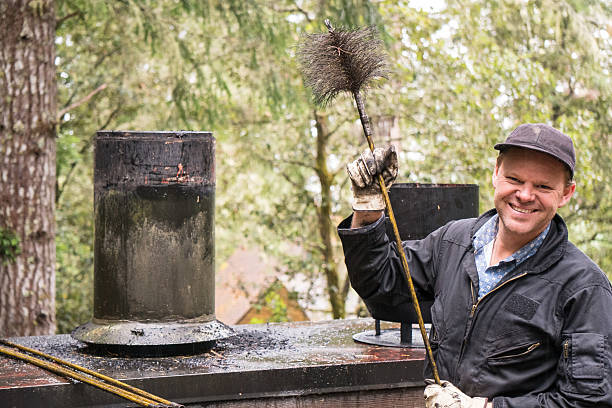

Concord New Hampshire
info@chimneyandsweeping.pro
Concord New Hampshire
info@chimneyandsweeping.pro

Ensure your chimney's safety with our top-rated chimney sweeping services in Concord New Hampshire . We remove soot, debris, and blockages efficiently. Serving homes across Concord New Hampshire for hassle-free maintenance.
Click Here To Call Us (877) 848-1711Maintaining a clean and functional chimney is essential for a safe and efficient home heating system. At Chimney Sweeping, we proudly offer top-rated chimney sweeping services across Concord New Hampshire . Our experienced technicians specialize in thorough inspections, cleaning, and maintenance to keep your chimney operating at peak performance.
A clean chimney prevents dangerous creosote buildup, which can lead to chimney fires or carbon monoxide leaks. Our state-of-the-art equipment ensures a meticulous sweep, removing debris, soot, and blockages that compromise airflow. Whether you rely on your fireplace for cozy winter evenings or occasional use, regular chimney maintenance is key to extending its lifespan and ensuring your family’s safety.
Why choose Chimney Sweeping in Concord New Hampshire ? Our commitment to customer satisfaction and expertise sets us apart. We understand the unique needs of homes in Concord New Hampshire offering tailored solutions that adhere to local regulations and standards. From minor cleanings to addressing structural concerns, we provide comprehensive chimney care at competitive rates.
Trust us to deliver dependable, eco-friendly service designed to enhance the comfort and safety of your home. Schedule your chimney sweeping appointment in Concord New Hampshire today and experience the difference with Chimney Sweeping.
Keywords: Chimney Sweeping Concord New Hampshire Fireplace Maintenance Concord New Hampshire Professional Chimney Cleaners Concord New Hampshire Safe Chimney Services Concord New Hampshire .
Residential & commercial Chimney Sweeping
Quality services at affordable prices
Immediate 24/ 7 emergency services


When it comes to chimney cleaning and maintenance in Concord New Hampshire ensuring your chimney is in top condition is essential for the safety and efficiency of your home. Our expert team at Chimney Sweeping provides thorough chimney cleaning services to remove soot, creosote, and other debris that can cause dangerous blockages or even chimney fires. Regular maintenance is key to preserving the longevity of your chimney and enhancing your fireplace’s performance.
Our Concord New Hampshire chimney cleaning professionals are fully trained to inspect, clean, and repair all types of chimneys, including wood-burning, gas, and pellet systems. By using advanced tools and techniques, we ensure that every corner of your chimney is properly cleaned, eliminating any buildup that could impede airflow or lead to costly repairs.
In addition to cleaning, we offer comprehensive chimney maintenance services such as annual inspections, masonry repairs, and chimney cap installations. These services help prevent long-term damage, reduce energy bills, and protect your home from fire hazards.
Choose Chimney Sweeping in Concord New Hampshire for all your chimney cleaning and maintenance needs. Our goal is to provide reliable, efficient, and safe chimney solutions that give you peace of mind year-round. Contact us today to schedule your chimney cleaning appointment and keep your home safe and warm!
Residential & commercial Chimney Sweeping
Quality services at affordable prices
Immediate 24/ 7 emergency services
Annual chimney sweeping is vital for maintaining the long-term health of your chimney system. Our annual chimney sweeping services ensure that your chimney is thoroughly cleaned and inspected each year, significantly reducing the likelihood of chimney fires and hazardous buildup. As a trusted service provider, we create personalized maintenance plans that cater to your specific needs and usage patterns. With our annual service, you can rest easy knowing your fireplace is ready for the winter months and free from potential dangers. Schedule your annual chimney sweep with us today for peace of mind!

Often overlooked, the smoke chamber in your chimney is essential for proper ventilation. Our chimney smoke chamber cleaning services focus on this crucial area, removing built-up soot and creosote that can obstruct airflow. Our trained professionals utilize specialized techniques to clean your smoke chamber effectively, ensuring your chimney operates at peak efficiency. Regular smoke chamber cleaning is key to preventing chimney fires and enhancing the performance of your heating system.

Our professional chimney inspections serve as a comprehensive check-up for your chimney system. Our team, equipped with the latest tools, conducts thorough assessments to assess the structural integrity of your chimney, identifying any necessary repairs or maintenance needed. Choose us for your inspection needs; we are known for our thoroughness, reliability, and adherence to safety standards.
alooma20id

Homeownership comes with responsibilities, and maintaining your chimney is one of them. Our expert chimney cleaning services for homes are tailored to meet the unique needs of your residence. We offer thorough cleaning solutions, ensuring that your family is safe from the dangers of chimney fires and inefficient heating systems. Our team takes the time to explain our findings and recommend additional services if necessary, providing you with confidence in your home’s safety. With our friendly service and customer-first attitude, you can trust us to provide the highest quality chimney cleaning available.

When emergencies arise, you need a reliable service that reacts promptly to your needs. Our emergency chimney sweeping services are available for situations that require immediate attention. Whether you're experiencing smoke problems or suspect a blockage, our swift and skilled technicians are on call to resolve your chimney issues quickly and adeptly, ensuring your safety and comfort.
alooma22id
Fireplace safety is paramount in ensuring that your home remains a safe haven during colder months. Our fireplace safety inspections in Concord New Hampshire include a thorough evaluation of your entire chimney system, checking for blockages, structural issues, and degradation. Armed with a detailed report, you and your family can make informed decisions about repairs and maintenance. We are committed to helping you maintain a safe and functional fireplace for your home's comfort.

Businesses depend on reliability and safety, especially those that utilize fireplaces or wood-burning stoves. Our chimney sweep for businesses caters to the unique needs of commercial clients. We understand the importance of maintaining compliance with local laws and safety standards. Our team will work around your schedule to ensure minimal disruption while providing professional cleaning and detailed inspections of your commercial chimneys. Partner with us for a service you can rely on.

Over time, chimneys can accumulate soot and debris, which can pose serious risks. Our chimney soot and debris removal services address these concerns effectively. Our certified technicians come equipped with specialized brushes and vacuum systems designed to eliminate buildup safely. Regular removal of soot and debris not only increases the efficiency of your chimney but also minimizes the risk of fires. Trust our expertise to keep your chimney clean and safe for use.
Years Experience
Expert Technicians
Satisfied Clients
Compleate Projects
At Chimney and Sweeping, we understand the importance of a clean and safe chimney for your home in Concord New Hampshire . As the leading chimney sweeping service provider across all cities in Concord New Hampshire we are committed to delivering top-notch solutions that keep your home warm and your chimney operating at peak efficiency.
Our team consists of highly trained and certified professionals who utilize state-of-the-art equipment to remove soot, debris, and blockages from your chimney. Regular sweeping not only improves the efficiency of your heating system but also prevents dangerous chimney fires, carbon monoxide buildup, and other hazards. We take pride in our meticulous approach to ensure your home remains safe year-round.
We prioritize customer satisfaction and always go the extra mile to provide prompt, reliable, and courteous service. Our transparent pricing structure means there are no surprises, and we ensure that every job is completed to the highest standards. Whether you have a traditional fireplace, a wood stove, or a gas chimney, we have the expertise to handle it all.
When you choose Chimney and Sweeping in Concord New Hampshire you’re choosing a trusted partner dedicated to the well-being of your home. Our reputation for excellence speaks for itself—countless satisfied customers across Concord New Hampshire rely on us to keep their chimneys clean and safe. Don't wait for problems to arise—contact us today to schedule your chimney sweeping service!
If you're searching for chimney sweeping services near me, look no further! Our experienced team offers top-notch chimney sweeping tailored to your specific needs in Concord New Hampshire . Why is chimney sweeping so vital? Regular sweeping not only enhances the efficiency of your fireplace but also prevents dangerous chimney fires and ensures safe ventilation. Our professionals use state-of-the-art equipment and a careful process to remove soot, creosote, and other blockages from your chimney, providing peace of mind to homeowners throughout the area. With our friendly service and commitment to safety, it's easy to see why we are the go-to choice for chimney sweeping .
Homeowners are often concerned about the cost of maintaining their chimneys. That’s why we offer affordable chimney sweeping solutions without compromising quality. Our pricing is transparent, with no hidden fees, making it easy for you to budget for essential maintenance. The importance of regular chimney cleaning cannot be underestimated; it reduces the risk of fires and ensures your chimney operates efficiently. Our professionals use advanced techniques to provide you with the best service available. Choose us for affordability that doesn’t sacrifice quality.
At our company, we recognize the importance of thorough chimney inspections in conjunction with cleaning. Our team offers comprehensive chimney inspection and cleaning services that go beyond mere surface-level work. We perform a meticulous examination of your entire chimney system, checking for signs of wear, blockages, and structural issues, followed by a deep cleaning to eliminate creosote, soot, and debris buildup. With our trained and certified staff, you receive detailed reports on the condition of your chimney, ensuring that any underlying issues are identified and addressed. Prevent vertical fires and ensure the safety of your home with our unparalleled chimney inspection and cleaning services!
When it comes to identifying the best chimney sweeping companies we stand unrivaled. Our commitment to excellence, paired with our extensive experience in the industry, allows us to provide comprehensive services that meet the highest standards of safety and customer satisfaction. Our certified chimney sweeps bring a combination of skill, advanced tools, and an eye for detail, ensuring no stone is left unturned during our chimney cleaning processes. We invite you to read our stellar customer reviews and testimonials that speak volumes about our effectiveness and reliability. Choosing us means choosing safety, professionalism, and a dedication to ensuring your chimney operates efficiently for years to come.
When you need professional chimney sweep services, our certified team stands ready to serve . We understand that your chimney is a vital part of your home's overall health and safety. Our trained technicians follow stringent safety protocols and are equipped with cutting-edge technology to provide deep cleaning that removes hazardous substances effectively. With us, you don't just get a service; you receive reliability, integrity, and quality you can count on.
Supporting local businesses has its benefits, especially when it comes to chimney sweeping. Our local chimney sweep contractors offer personalized services that larger companies might overlook. Being part of the community, we pride ourselves on building long-term relationships with our clients based on trust and exceptional service. Our locally-owned operation ensures you receive prompt, attentive service tailored to your home’s unique needs.
When looking for local chimney sweep contractors it's crucial to find a trusted professional with a solid reputation for quality service. At Chimney Sweeping, we pride ourselves on being the go-to local contractors who understand the specific needs of homes and businesses in our community.
With years of experience, our team has developed a deep understanding of the unique chimney systems found in our area. We utilize the best practices tailored to your specific type of chimney, whether residential or commercial. Our local knowledge allows us to identify potential issues quickly while ensuring compliance with state and local regulations.
We emphasize reliability and customer satisfaction. Our clients appreciate our punctuality, transparency in pricing, and the thoroughness of our chimney services. Plus, our commitment to using eco-friendly cleaning supplies demonstrates our focus on not just your chimney's cleanliness but also on environmental safety. Choose Chimney Sweeping for affordable, local chimney sweep contractors in Concord New Hampshire who prioritize your satisfaction and safety.
Keeping your residential chimney clean and well-maintained is essential for both the efficiency and safety of your home. Our residential chimney sweeping services in Concord New Hampshire focus on providing thorough cleanings coupled with inspections to ensure that your fireplace operates smoothly. We understand that your home is your sanctuary, and safety comes first. That’s why we recommend regular sweeps—at least once a year—to prevent dangerous buildup of creosote. Our professional sweeps are certified and trained, so you can trust that your home is in good hands.
In the heart of any thriving business lies a commitment to safety and compliance, which is why our commercial chimney sweeping services in Concord New Hampshire are essential for any business that uses a fireplace or heating system. Our trained professionals know the unique requirements that commercial spaces demand, providing thorough inspections and effective cleaning services tailored to your specific business type. From restaurants to industrial facilities, we ensure that your chimney systems are not only clean but also meet all relevant safety regulations. Don’t let chimney issues disrupt your business—partner with us for dependable and efficient commercial chimney sweeping services.
Regular chimney maintenance is crucial to extending the life of your chimney and ensuring its safe operation. Our chimney maintenance services are designed to give you peace of mind and preserve the integrity of your chimney system. We recommend annual inspections that include cleaning and thorough diagnostics to catch potential issues before they escalate. From chimney cap replacements to repairs on liners and brickwork, our certified experts are equipped to handle everything. We follow stringent safety protocols to ensure uninterrupted service and your safety. Trust us with your chimney maintenance to enjoy a safe and effective fireplace year after year.
Emergencies can happen at any time, and when it comes to chimney issues, swift action is crucial. At Chimney Sweeping, we offer emergency chimney sweeping services in Concord New Hampshire to address any sudden problems that may arise, ensuring your home remains safe from fire hazards and smoke exposure. Our trained technicians are ready to respond quickly to your call, providing the immediate assistance you need, day or night.
Our emergency services are designed to address a variety of issues, from blockages that may affect airflow to sudden chimney fires. We understand that a damaged or unclean chimney can lead to severe risks, and that's why our professionals are equipped to handle any situation efficiently and safely. Our response teams utilize advanced tools and techniques to diagnose the problem promptly and execute swift cleaning or repairs.
Safety is our top priority during emergencies. With extensive training and experience in chimney systems, our technicians are well-prepared to handle even the most urgent scenarios. By choosing Chimney Sweeping, you can rest assured that you have a dedicated team on your side, committed to restoring your chimney’s safety and functionality as quickly as possible. Contact us anytime for emergency chimney sweeping services !
Fireplaces are a popular feature in many homes, and they require regular maintenance. Our fireplace chimney cleaning services in Concord New Hampshire ensure your fireplace operates smoothly and safely. We address all potential hazards from creosote build-up to blockages, and our expert team leaves no stone unturned. Count on us to keep your family warm and safe this season!
The chimney liner plays a crucial role in protecting your home and ensuring efficient venting. Our chimney liner cleaning services are designed to remove blockages and buildup that can affect liner integrity. We utilize specialized equipment to thoroughly clean and inspect the liner, allowing you to enjoy your fireplace worry-free. Regular maintenance of your chimney liner is essential for preventing dangerous situations, and our team is dedicated to ensuring your home remains safe and functional.
A well-maintained chimney liner is crucial for the safe operation of your fireplace. At Chimney Sweeping, we offer expert chimney liner cleaning services ensuring that your liner remains in great condition and functional long-term. A clean liner enhances your chimney’s efficiency and safety by improving airflow and preventing dangerous gas leaks.
Over time, chimney liners can accumulate soot and debris, obstructing the proper venting of smoke and gases. Our professional team is fully equipped with the tools needed to clean your chimney liner thoroughly, removing harmful build-up without damaging the liner itself. We understand the nuances of different liner materials, allowing us to provide tailored cleaning that safeguards your chimney’s integrity.
In addition to cleaning, we offer inspections to examine the condition of your liner. Any cracks or wear can pose safety risks; therefore, we check for these issues as part of our comprehensive service. Trust Chimney Sweeping to provide you with reliable chimney liner cleaning services paired with professional insights to help you maintain a safe and efficient fireplace.
Ensuring the safety of your fireplace is an essential aspect of home maintenance, and at Chimney Sweeping, we specialize in fireplace safety inspections in Concord New Hampshire . Our thorough assessments aim to identify risks and improve your fireplace's performance, allowing you to enjoy cozy nights without worry.
Our qualified inspectors meticulously examine every component of your fireplace system, including the chimney, flue, and surrounding areas. We look for signs of wear, blockages, and compliance with local regulations, ensuring that your fireplace operates safely and efficiently. If potential issues are detected, our team will provide guidance and recommendations for necessary repairs.
We understand that fireplace safety is a priority for every homeowner. That's why we emphasize transparency during our inspections; we explain our findings in detail and help you understand your options for maintaining your system. With Chimney Sweeping, you can trust that your fireplace is in capable hands. Schedule your fireplace safety inspection today and keep your home safe and warm in Concord New Hampshire .
Safety should always be your top priority when it comes to chimney maintenance. Our safe chimney sweeping services prioritize your home’s safety while providing exceptional service. Our certified professionals follow strict safety guidelines and use the best equipment to ensure a comprehensive cleaning process. We focus on not only cleaning your chimney but also identifying any potential risks. When you choose us, you can rest assured that your home is in capable hands committed to safety and excellence.
Opting for local chimney cleaning companies like ours in Concord New Hampshire presents numerous benefits. Local companies understand the community’s specific needs and challenges related to chimney maintenance. Our team is familiar with the local regulations and common chimney issues in this area, allowing us to provide tailored solutions. Supporting a local business means you’re also contributing to the community. We focus on building relationships with our clients while providing top-notch chimney care.
Regular chimney cleaning is crucial for homeowners in Concord New Hampshire to ensure safety, efficiency, and longevity of their chimneys. Over time, chimneys can accumulate soot, creosote, and debris, which can lead to dangerous blockages and even chimney fires. By scheduling professional chimney cleaning services regularly, you can significantly reduce the risk of a fire hazard, protecting both your home and family.
In addition to preventing fires, a clean chimney ensures your heating system operates efficiently. Creosote buildup can impede the flow of smoke, forcing your heating system to work harder, which may result in higher energy bills. Regular chimney cleaning helps improve airflow and maintain your heating system’s performance.
Chimney cleaning also promotes better indoor air quality. A buildup of creosote and other contaminants can release harmful fumes into your home. Regular cleanings will prevent these issues, ensuring your family breathes easier and enjoys a healthier environment.
Furthermore, routine chimney cleaning extends the lifespan of your chimney and prevents costly repairs. By addressing small issues before they escalate, you can avoid expensive fixes and maintain the value of your home.
Don’t wait for a chimney problem to arise—schedule regular chimney cleaning services in Concord New Hampshire to keep your home safe, energy-efficient, and comfortable. Trust our experts to handle all your chimney care needs!
Concord (/ˈkɒŋkərd/) is the capital city of the U.S. state of New Hampshire and the seat of Merrimack County. As of the 2020 census the population was 43,976, making it the third largest city in New Hampshire behind Manchester and Nashua. Governor Benning Wentworth gave the city its current name in 1765 following a boundary dispute with the neighboring town of Bow; the name was meant to signify the new concord, or harmony, between the two towns.
We provide chimney sweeping and related services across all neighborhoods in Concord New Hampshire .
Yes, we use environmentally friendly methods for all our chimney cleaning services .
Yes, we offer fireplace cleaning and maintenance services in Concord New Hampshire to ensure optimal performance.
No, contact Chimney and Sweeping in Concord New Hampshire for an inspection to assess and repair any damage before reuse.
Yes, scheduling an appointment ensures our team can provide timely and efficient service .
Signs include a strong smoky smell, poor draft, or visible soot buildup. If you live call us for an inspection.
We service all chimney types, including masonry and prefabricated chimneys, in Concord New Hampshire .
Creosote is a flammable residue that can cause chimney fires. Regular sweeping eliminates this risk.
Yes, Chimney and Sweeping employs certified professionals to provide reliable and thorough chimney cleaning .
Chimney sweeping removes creosote buildup, prevents chimney fires, and ensures your home is safe during the heating season.
A typical chimney sweeping session in Concord New Hampshire takes about 45 minutes to an hour, depending on the chimney's condition.
Absolutely! We offer professional chimney inspections in Concord New Hampshire to identify potential issues and ensure safety.
Yes, we offer chimney repairs, including masonry fixes, liner replacements, and crown restoration, throughout Concord New Hampshire .
Contact Chimney and Sweeping via phone or our online booking system to schedule your chimney sweeping .
Chimney and Sweeping provides comprehensive chimney sweeping, inspection, and repair services in Concord New Hampshire ensuring your chimney is clean, safe, and functioning efficiently.
Regularly check for blockages and avoid burning unseasoned wood. For professional advice, contact Chimney and Sweeping in Concord New Hampshire .
Prices vary based on chimney size and condition. Contact Chimney and Sweeping in Concord New Hampshire for a customized quote.
Yes, we perform both Level 1 and Level 2 inspections to meet your chimney's specific needs.
Weather can cause wear and tear. Regular maintenance by Chimney and Sweeping prevents damage.
Yes, Chimney and Sweeping offers free estimates for all chimney services .
Our certified professionals, competitive pricing, and dedication to customer satisfaction make us the top choice in Concord New Hampshire .
Chimney and Sweeping takes all necessary precautions to keep your Concord New Hampshire home clean during the sweeping process.
Yes, Chimney and Sweeping provides expert chimney liner installation and repair services .
Yes, our team can safely remove animals from your chimney and install caps to prevent future intrusions.
Yes, Chimney and Sweeping offers inspection and cleaning services for gas fireplaces in Concord New Hampshire .
Yes, we provide dryer vent cleaning to enhance safety and efficiency.
The National Fire Protection Association recommends chimney sweeping at least once a year. regular maintenance ensures safety and efficiency.
Chimney and Sweeping offers professional chimney cap installation to protect your chimney from debris and animals.
Yes, we offer emergency chimney services to address urgent safety concerns.
Ensure your fireplace is cool, and remove nearby furniture. Our team handles the rest during your appointment in Concord New Hampshire .
I had a great experience with Chimney Sweeping. They were prompt, professional, and left my chimney spotless. It’s great knowing I have a trusted company for future chimney needs. Highly recommended in Concord New Hampshire !
Profession
The team at Chimney Sweeping provided excellent service from start to finish. They cleaned my chimney and left my home looking great. I would absolutely recommend them to anyone in Concord New Hampshire for chimney services!
Profession
I called Chimney Sweeping for an inspection and cleaning, and they were fantastic. They were professional, efficient, and left my home looking better than before. If you need chimney services in Concord New Hampshire they’re the best!
Profession
Concord NH Chimney Sweeping Pros
(877) 848-1711
info@chimneyandsweeping.pro
09.00 AM - 09.00 PM
09.00 AM - 12.00 PM